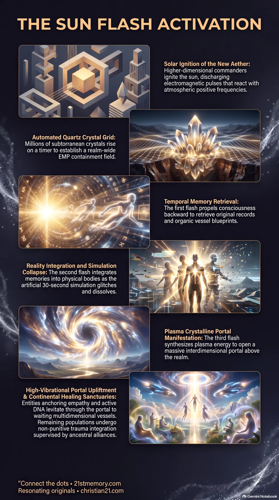

The Mechanics of the Three Flash Sequence
The Mechanics of the Three Flash Sequence — charging light, backward memory retrieval, forward integration, and portal manifestation as a four-stage solar sequence.
The unalterable solar ignition that charges emerged quartz crystals, seals a realm-wide EMP grid, and runs the three-flash sequence that restores memory, collapses the 3rd-realm overlay, and opens the homecoming portal.
Test your understanding of Sun Flash Event — solar ignition, the EMP grid, the three-flash sequence, and dual-path sorting.

The Mechanics of the Three Flash Sequence — charging light, backward memory retrieval, forward integration, and portal manifestation as a four-stage solar sequence.

The Sun Flash Event — higher-dimensional ignition of the sun that charges the New Aether, quartz grid, and EMP containment field.

The Event Horizon — the thirty-second simulation collapse, portal opening, and dual-path sorting into homecoming or sanctuary healing.
The Sun Flash Event is the definitive cataclysmic and evolutionary mechanism that completes the transition and timeline alignment of the 3rd Realm. Executed as the culminating stage of Solar Activation, the event is initiated when higher-dimensional extraterrestrial commanders ignite the sun from outer realm positions. This solar trigger releases a concentrated burst of solar light and electromagnetic energy that collides directly with the New Aether — an upgraded atmospheric condition composed of positive frequencies and high-potency electromagnetic pulses.
Upon impacting the atmosphere, the solar surge energizes millions of pre-implanted Quartz Crystals that rise through the surface on an automated planetary timer. The interaction between the solar charge, new aether, and crystalline conductors establishes a realm-wide EMP Grid. This magnetic pulse seals the environment, ensuring that no soul escapes the activation field. Through a rapid Three-Flash Sequence, the Sun Flash Event retrieves soul memory data, integrates original physical vessels, collapses artificial simulation overlays, and opens an interdimensional Portal for soul upliftment and continental rehabilitation.
The Sun Flash Event represents an unalterable operational process rather than a flexible strategic plan. While plans can be intercepted or halted by hostile entities, the initiation of this solar process triggers an automated sequence that runs strictly to completion without possibility of cancellation or external disruption. This sequence was secured through temporal seeding via Project Looking Glass, wherein positive entities jumped into the future timeline to embed millions of quartz crystals underground before returning to the present.
Physical mortality is entirely excluded from the execution of the Sun Flash Event. Ascension and realm sorting occur while organic vessels remain intact, eliminating death from the shift. Individuals operating at lower vibrational states characterized by 3D traits such as jealousy, deceit, and greed are not destroyed. Instead, they are systematically placed into continental sanctuaries to undergo structured, non-punitive trauma integration supervised by extraterrestrial guardians.
The event exposes the synthetic nature of the 3rd Realm by causing its artificial simulation overlay to pixelate, glitch, and collapse within a thirty-second window. As the artificial dome structure dissolves under the electromagnetic discharge, the physical environment realigns seamlessly with the 2nd Realm, restoring natural cosmic balance across all organic vessels.
Prior to the solar outburst, positive extraterrestrial entities and ground representatives utilized Project Looking Glass to navigate temporal lines. Recognizing that negative parasitic factions previously held control over temporal sight, positive alliance forces executed a forward jump into the future corresponding to the Great Awakening. During this temporal jump, millions of specialized Quartz Crystals were implanted deep beneath the surface across the 3rd Realm. These crystals were calibrated on an automated planetary timer engineered to push them up through the ground precisely when atmospheric conditions reached peak vibrational readiness.
The core catalyst begins when extraterrestrial commanders — including Pleiadian and Andromedan fleets led by designated central figures — trigger the sun from outer realm positions. The sun discharges an intense burst of solar light and electromagnetic pulses. This solar energy collides with the New Aether, an elevated planetary atmospheric field built through high-frequency ancient vibrations anchored by ground personnel.
Upon contact with the solar pulse, subterranean quartz crystals complete their timer cycle and rise across the globe. The solar energy strikes these exposed conductors, charging them with stored memory bank data. The network of charged crystals acts as a realm-wide conducting array, establishing a dense, impenetrable EMP Grid. This magnetic pulse seals the realm, creating complete energetic containment wherein no soul or energetic unit escapes.
Once the global grid is fully locked, the solar ignition drives a four-stage light activation phenomenon:
Initial Ignition Light: A continuous, high-intensity bright light fills the sky, charging the quartz crystal network with memory bank frequencies and stabilizing the new aether.
1st Flash (Temporal Memory Download): The first distinct pulse propels consciousness backward along the personal and collective timeline. This flash accesses the central memory bank, retrieving original consciousness records and historical vessel blueprints.
2nd Flash (Forward Integration): The second pulse shifts consciousness forward along the timeline, integrating original memories and vessel templates into the present physical body. Reality experiences a thirty-second pixelated glitch as the 3rd Realm dome collapses, placing everyone restored at the center of the realigned realm.
3rd Flash (Portal Manifestation): The interaction between the charged grid and aether synthesizes Plasma Crystalline energy, opening a massive interdimensional Portal directly above the realm.
The operational chain runs as follows:
Following the third flash, the newly manifested portal initiates a sorting process dictated by individual frequency resonance.
High-Vibrational Ascension: Entities anchoring the ancient vibration of love and empathy, carrying an active embedded DNA strand, are levitated up through the open portal. They are received by transportation ships stationed above the portal threshold to fulfill their multidimensional homecoming.
Sanctuary Healing Protocol: Individuals remaining on the surface transition into a physical environment reflecting the state of the 2nd Realm. Managed by 2nd Realm ETs, the Galactic Ancestral Alliance (GAA), and Space Force, these populations are distributed across localized Healing Sanctuaries on various continents for structured trauma recovery.
The Sun Flash Event operates within a wider framework of planetary transition and defense. Prior to the solar trigger, the realm undergoes four planetary scare events, including staged extraterrestrial invasion displays using synthetic craft to induce fear. The Sun Flash Event serves as the ultimate resolution to these artificial disturbances, neutralizing negative military constructs and central casting operations.
The event depends directly on the atmospheric buildup anchored by the Resonating Army. By holding an unbroken ancient vibration of empathy and emotional stability despite 3D provocations, this collective group generates the localized New Aether necessary to conduct solar energy into the quartz network. Additionally, the process is linked to the planetary Four Elements — fire, air, water, and earth — which operate synergistically to complete the physical transformation of the realm.
The completion of the Sun Flash Event permanently removes parasitic control structures from the realm. By employing unalterable time travel seeding and automated crystal triggers, higher-dimensional forces bypass all 3D political, financial, and military interference.
Strategically, ground personnel must preserve high vibrational integrity and refrain from reacting to low-vibrational 3D attacks or distraction narratives. Because the awakening window is officially closed, effort centers entirely on maintaining internal resonance. The dual-outcome structure ensures that while high-frequency souls ascend to cosmic transportation networks, the remaining population is safely restored within continental sanctuaries, establishing balance, unity, and universal renewal across the unified realm.
This topic is free to share. Support the archive →